Nyzo version 549 (commit on GitHub) adds retrieval of blocks behind frozen edge to enable faster recovery for in-cycle verifiers. It also substantially reduces the network usage of out-of-cycle verifiers.
This version affects the verifier. It includes improvements for both in-cycle and out-of-cycle verifiers.
In Block.fromByteBuffer(), transaction validation has been eliminated for all blocks behind the frozen edge.
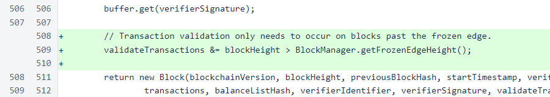In Block.chainScore(), a special case has been added for new verifiers to be allowed to send their blocks without having sufficient history to properly score blocks. As the comment explains, this score will often be incorrect, but the consequences of that incorrect score are acceptable and do not weaken the system.

The visibility of the BlockManager.loadBalanceListFromFile() method has been changed to public to allow it to be accessed from the new HistoricalChainFiller class.
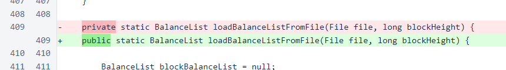In ChainInitializationManager, a maximum number of attempts has been added to the loop in the fetchBlock() method. The initializeFrozenEdge() method, which uses the fetchBlock() method, was previously only used during the verifier initialization process. Now, the reinitializeFrozenEdge() method of Verifier also uses the initializeFrozenEdge() method, executing it in a separate thread. The iteration limit ensures that these threads eventually complete.
The logging statement in the initializeFrozenEdge() method has been updated to be accurate in both the old and new uses of the method.
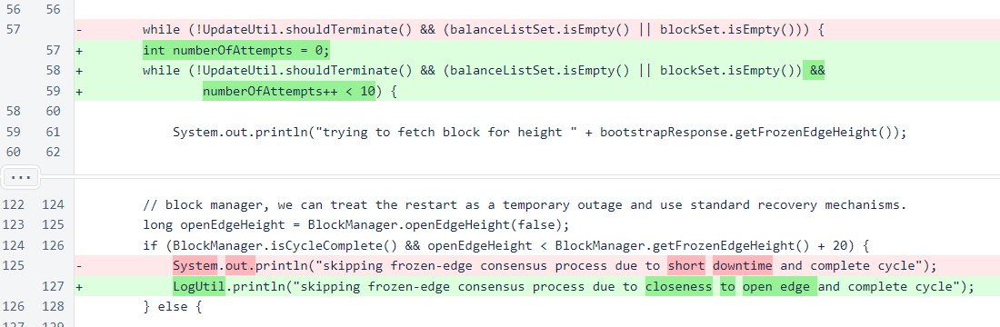The ChainSectionRetriever class, true to its name, encapsulates a process for retrieving a section of the blockchain. The start height, end height, and an "anchor hash" are specified. The anchor hash is the expected hash of the block at the end height.
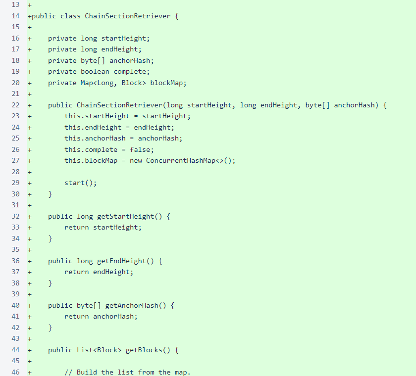The ChainSectionRetriever runs a sequential fetch process in a separate thread, working backward from the end height to the start height.
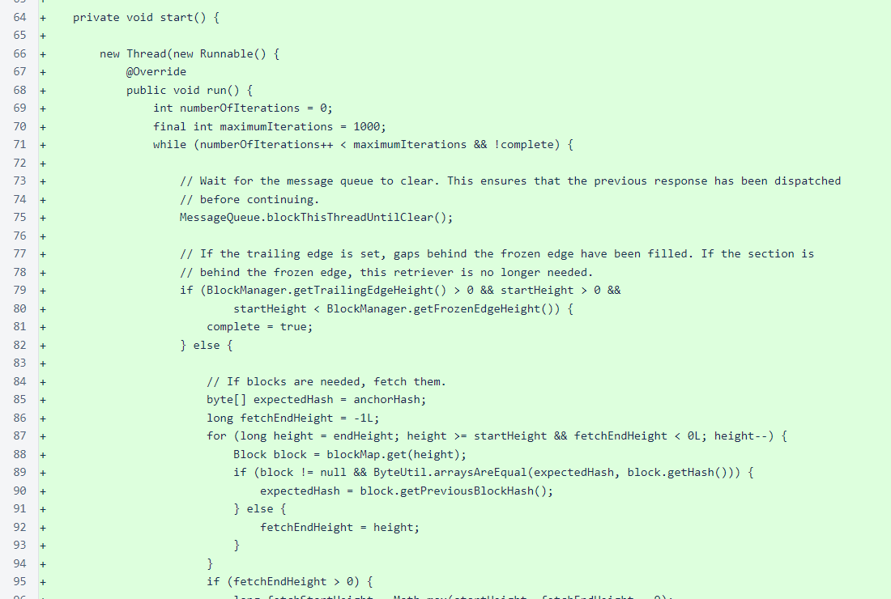The processFetchResponse() method adds valid blocks from block responses to a map that is keyed on block height. This map is later used by the getBlocks() method to produce a list of blocks ordered on block height.
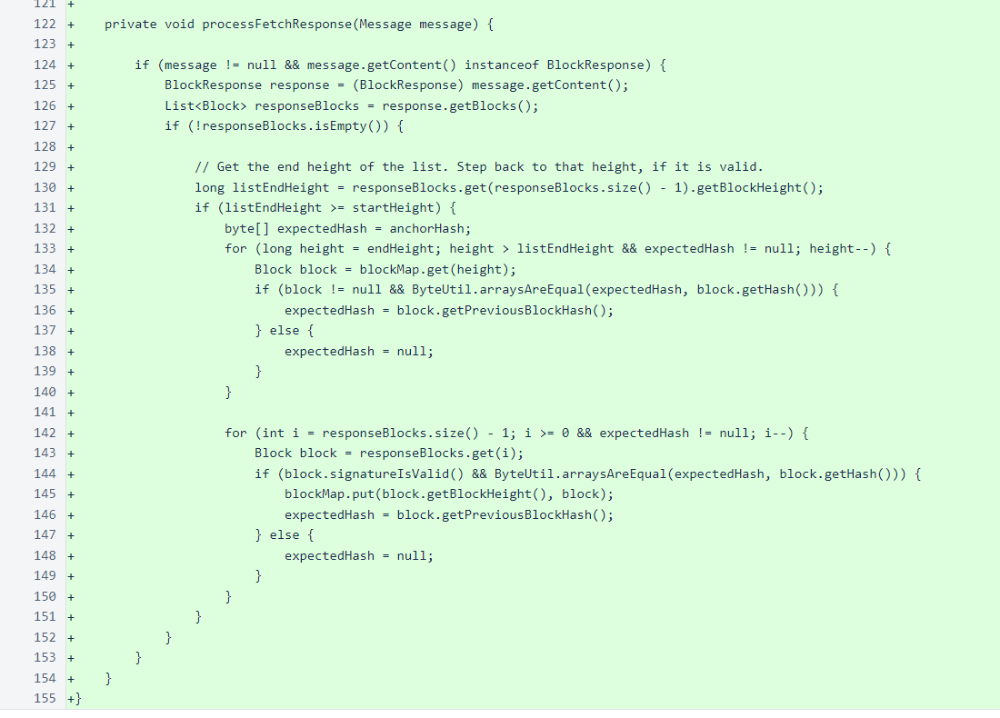HistoricalChainFiller uses a combination of consolidated block files and block requests to fill the chain between the trailing edge and the frozen edge. Previously, a verifier with an incomplete chain history would wait for the chain to advance to a point where the any missing history was no longer relevant. However, this takes considerable time with longer verifier cycles. In-cycle verifiers are unable to properly produce or vote for blocks when they to not have a complete history between the trailing edge and the open edge, which prevents them from fully participating in the cycle.
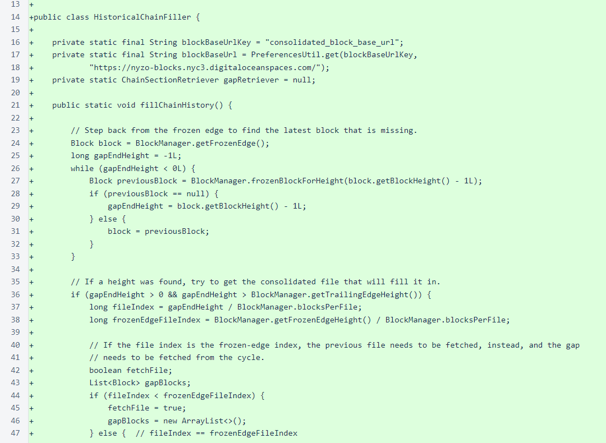The HistoricalChainFiller primarily relies on consolidated 1000-block files to provide blocks behind the frozen edge. For ranges of blocks not yet available in consolidated files, the new ChainSectionRetriever is used.
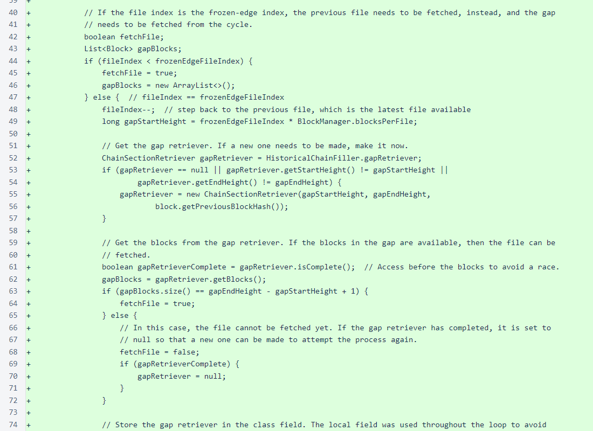The requestFile() method retrieves the newest consolidated file before the currently available blockchain history. Any gap between the available history and the end of this file is provided in the gapBlocks list, which is fetched using a ChainSectionRetriever instance. The blocks are verified and saved to local storage. The consolidated file is saved directly as fetched, and gap blocks are written to individual block files.
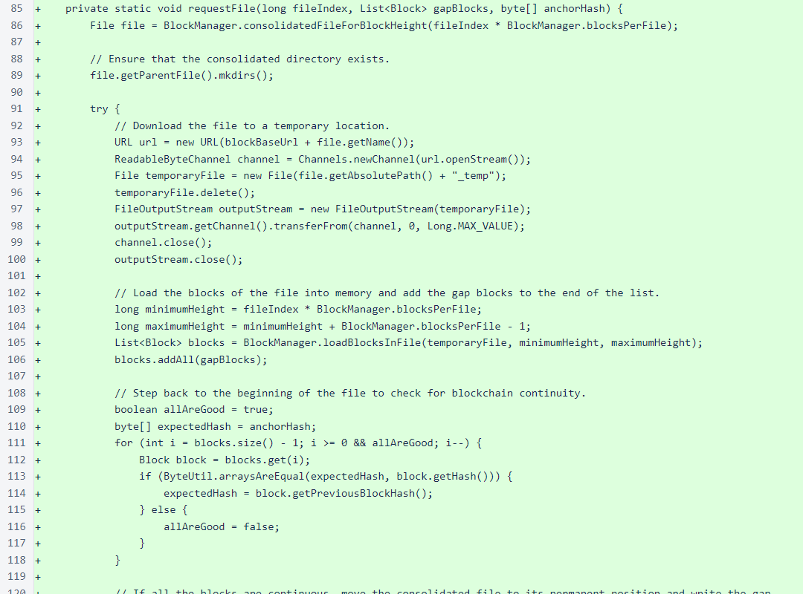Unrelated to the core changes of this version, the verifierChangeAllowed() method has been removed from NodeManager. This was initially intended to combat centralization, but the only effective way to address centralization is through improvement of the entrance process. This method was only causing confusion about verifier behavior and making debugging of node issues unnecessarily difficult.
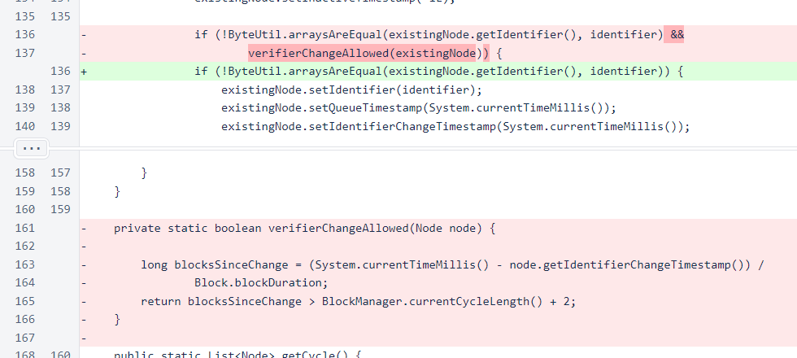Also unrelated to the core changes of this version, the SeedTransactionManager class has been simplified. The lastBlockRequested field has been replaced with references to BlockManager.getFrozenEdgeHeight(), and raw Thread.sleep() calls have been replaced with ThreadUtil.sleep() calls to eliminate the verbosity of required exception handling.
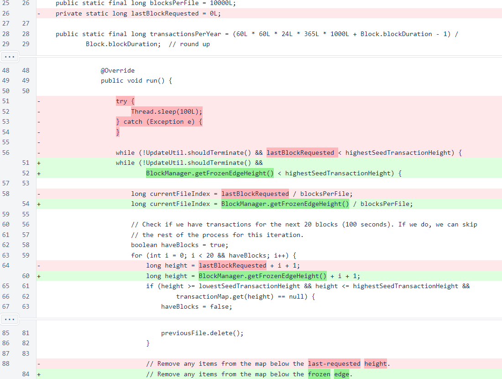The base URL for seed-transaction files has been changed from AWS S3 to Digital Ocean Spaces. These are equivalent services, but the Digital Ocean service is considerably less expensive.
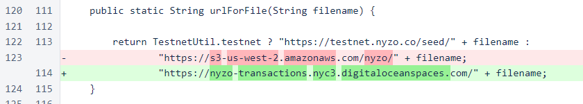The Verifier class has a new option to alwaysTrackBlockchain.
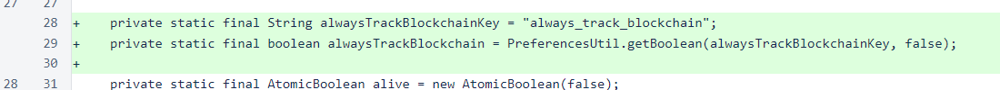Please note that the default behavior for out-of-cycle verifiers is different in this version than in the previous version. The new default behavior of a loose tracking of the blockchain is preferable for typical out-of-cycle verifiers, but special use cases may require close tracking of the blockchain by out-of-cycle verifiers. To have an out-of-cycle verifier closely track the blockchain, add the following line to /var/lib/nyzo/production/preferences:
always_track_blockchain=1
To accommodate this new, looser tracking of the blockchain, a reinitialization process has been added to periodically jump the verifier's copy of the blockchain close to the cycle's frozen edge. For the top-voted out-of-cycle verifier, this process happens every 1 minute. For other out-of-cycle verifiers, the process happens every 20 minutes.
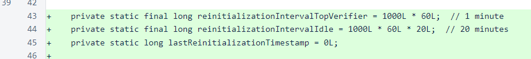The backfillInterval and associated timestamp control how frequently the verifier attempts to complete missing chain history.
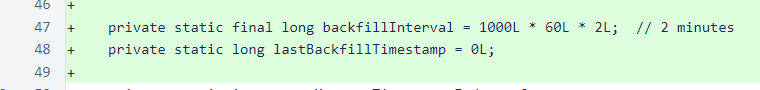In the main verifier loop, the top new verifier now shares the in-cycle condition that requests missing frozen and unfrozen blocks. Additionally, the top new verifier reinitializes the frozen edge in this condition and requests a block with votes. While this is a rather aggressive set of actions, such aggression is warranted. This verifier has suddenly gone from lazily tracking the blockchain to tightly tracking the frozen edge in order to produce a block to join the cycle.
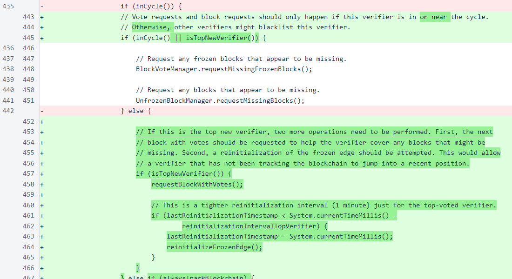When instructed to do so, out-of-cycle verifiers will closely track the frozen edge of the blockchain, even if they have no immediate opportunity to join the cycle.
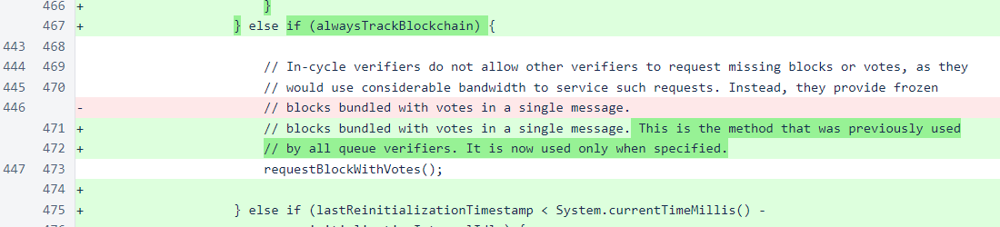If close tracking is not specified, out-of-cycle verifiers will loosely track the frozen edge of the blockchain, reinitializing every 20 minutes to maintain knowledge of which verifiers are in the cycle.
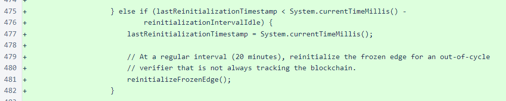A periodic call to HistoricalChainFiller has been added for times when the verifier has not yet established the blockchain trailing edge. If the trailing edge is unknown, blocks cannot be properly scored.
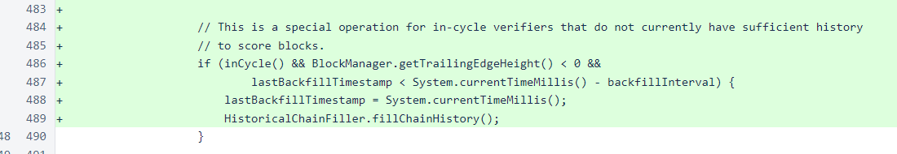Update of the top-voted verifier has been moved from the section of code that is executed when a block is frozen to the section of code that is executed on a regular interval roughly equal to the standard block duration. This ensures that out-of-cycle verifiers regularly update their top-voted verifier even if they are not regularly freezing blocks. Also, each time a set of individual block votes is requested, a block-with-votes request is also issued. This request serves the same basic function as the individual requests, but it allows blocks to be frozen much more quickly.

The top new verifier is now allowed to create new blocks even if the continuity state of the previous block cannot be determined. This allows new verifiers to create blocks immediately after they have reinitialized their frozen edges.
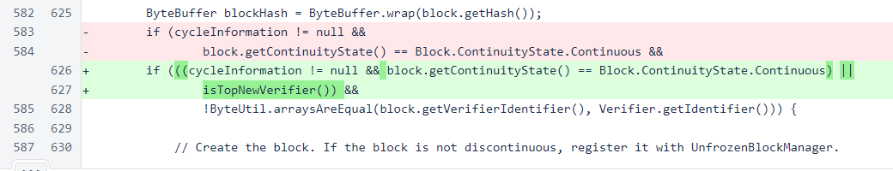The isTopNewVerifier() method is shorthand for checking if NewVerifierVoteManager has chosen the local verifier as the top verifier. The reinitializeFrozenEdge() method spawns a thread to execute the ChainInitializationManager.initializeFrozenEdge() method.
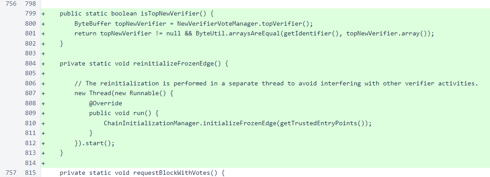In PreferencesUtil, an overload of the get() method, which is used to retrieve String values, has been added. This overload allows specification of a default value, and it is used for the consolidated_block_base_url preference in HistoricalChainFiller.
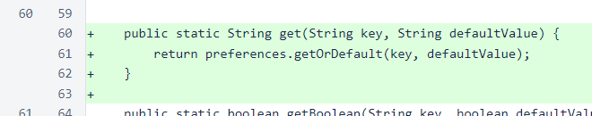